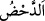
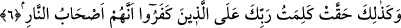

rasûliha” demek yerine (cem-i müzekker zamiriyle) “bi-rasûlihim” denmektedir. Zira
burada “ümmet” kelimesinden kadınlar dışarıda tutularak sadece erkekler
kasdedilmiştir.
‘Aynü’l-meânî’de de der ki: Erkekler kadınlara tağlîb edildiği için bu zamir
kullanılmıştır.
“Hemm,” hayır olsun şer olsun bir şeyi yapmazdan evvel kalbi o şeyi kesinlikle
yapmak kararı üzere bağlamaktır.
Âyetteki “ahz” esir etme anlamındaki “ahz”dandır. “Ahîz” de esir demektir. Buna göre
“liye’huzûhu” ifadesi esir etmek, hapsetmek, işkence edip öldürmek maksadıyla... gibi
mânâlara gelmektedir. Yâni kâfirler o peygamberi alsınlar, diledikleri ve istedikleri her
eziyeti ona ulaştırsınlar diye...”
Burada, tıpkı bu nebî ve rasullerin kendi çağlarında olduğu gibi, her asırda bir sâhib-i
velâyet bir zâtın bulunacağı ve bu gibi zatları red ve inkar edenlerin, onlara itiraz
edenlerin de mutlaka olacağına dair bir işâret vardır.
Ve bunlar hiçbir aslı astarı olmayan “bâtıl şeylere sarılarak…” kendi
peygamberlerine düşmanlık ettiler.
Fethu’r-Rahman’da şöyle der: Bâtıl, sûretâ var olduğu halde ya ehliyet şartını
taşımadığı ya da bir şeye meselâ satışa mahal olmadığı için tamamen anlamsız bulunan
şeylere denir. İçki ya da küçük bir çocuğu satmak gibi.
Tıpkı Mekke müşriklerinin yaptığı gibi o bâtılla, kendisinden kaçış olmayan hakkı “
”etmek; yâni zâil kılmak için mücâdele etmişlerdi.
“Bunun üzerine,” söz konusu cezâlandırma kararlılıklarına karşılık “ben onları
kıskıvrak yakaladım. İşte,” kendisiyle bu gibileri cezâlandırdığım “cezalandırmamın
nasıl olduğunu gör!”
Bu ve benzerlerinin helâk edilişini gösteren çeşitli kalıntılar, bakıp düşünenler için
gerçekten büyük bir ibrettir. Ki yaşadıkları yerlerden geçerken bu kalıntıları hep
görmektesiniz. Gidişatları aynı olduğu ve aynı suçta birleştikleri için şu müşrikleri de
yakalayıp cezalandıracağım!
Nitekim bu tehdid şu âyette açıkça zikredilir:
6. İnkâr edenlerin cehennem ehli olduklarına dair Rabbinin sözü böylece
gerçekleşti.
İşte kendi peygamberlerine karşı cephe alıp onlarla savaşan, onların getirip tebliğ
ettiği hakkı bâtıl birtakım şeylerle yok etmeğe uğraşan güruhlar hakkında kesinleşip
sabitleştiği gibi, “inkâr edenlerin” yâni senin Rabbini inkar ederek sana karşı
düşmanlıkta birleşen ve hakkında “nâil olamayacakları birtakım suikasdler tertipleyen”